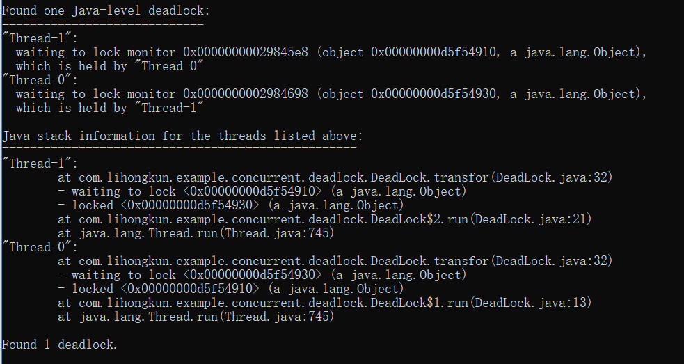

ReentrantLock能做到synchronized得功能，而且在JDK1.6以前性能比后者好很多。之后synchronized性能进行了改进，差距已经不是很大。
性能
在JDK1.8的情况下粗略测试了一下，ReentrantLock性能好25%左右。代码如下，线程数量从20逐渐递增到200，表现基本上很稳定。
public static void main(String[] args) {
final Counter counter = new Counter();
ExecutorService es = Executors.newFixedThreadPool(200);
long timeWatcher = System.currentTimeMillis();
for(int i=0;i<200;i++){
es.execute(new Runnable() {
@Override
public void run() {
for(int i=0;i<1000000;i++)
counter.incr();
}
});
}
es.shutdown();
while(true){
if(es.isTerminated())
break;
}
System.out.println("cost : "+(System.currentTimeMillis() - timeWatcher));
}
private static class Counter{
private ReentrantLock lock = new ReentrantLock();
private int cnt = 0;
public synchronized void incr(){
/*lock.lock();
try{*/
cnt++;
/*}
finally {
lock.unlock();
}*/
}
}
避免死锁
看段模拟转账的代码。2个账户转账的时候需要同时获得2个账户的锁才能进行操作。
//账户类
public class Account {
public Object lock = new Object();
public void doSomething(){
System.out.println(Thread.currentThread().getName());
}
}
public static void main(String[] args) {
final Account a1 = new Account();
final Account a2 = new Account();
Thread t1= new Thread(new Runnable() {
@Override
public void run() {
while(true)
transfor(a1, a2);
}
});
Thread t2= new Thread(new Runnable() {
@Override
public void run() {
while(true)
transfor(a2, a1);
}
});
t1.start();
t2.start();
}
//转账操作
public static void transfor(Account a1,Account a2){
synchronized (a1.lock) {
synchronized (a2.lock) {
a1.doSomething();
a2.doSomething();
}
}
}
该段代码运行后会直接卡主。使用jstack看下，检测到死锁。

内置锁避免死锁的方法只有一个，就是在编写代码的时候避免不一致的锁顺序，一旦遇到死锁很致命，应用程序只能重启。上面代码a1->a2和a2->a1的转账同时发生的时候，锁顺序是不一致的。这种情况使用ReentrantLock可以使用轮询的定时锁来解决。
public static void transfor(ReentrantAccount a1,ReentrantAccount a2){
a1.lock.tryLock();
try{
a2.lock.tryLock();
try{
a1.doSomething();
a2.doSomething();
}
finally {
a2.lock.unlock();
}
}
finally {
a1.lock.unlock();
}
}
tryLock失败不会等待，实际使用中可以给出对应的提示，然后进行重试。
此外它的尝试加锁还能指定等待时长。tryLock可以制定timeout的时间，还有lockInterruptibly能够被中断的锁。这些都是synchronized内置锁不能实现的。
公平锁及条件变量
传统的线程间协作可以使用Object的wait(),notify(),noiftyAll().
public class BoundedBlockingQueue<T> {
final LinkedList<T> items = new LinkedList<T>();
final int totalCount = 100;
public void put(T x) throws InterruptedException {
synchronized (items) {
while (totalCount == items.size())// 如果队列满了
items.wait();
items.addLast(x);
items.notify();
}
}
public T take() throws InterruptedException {
synchronized (items) {
while (items.size() == 0)// 如果队列满了
items.wait();
T x = items.removeFirst();
items.notify();
return x;
}
}
}
上面是一个有界队列，不管如果是队列满了进行put操作就会wait并释放内置锁,再次获得执行权只能等待notify.同样队列为空的时候进行take操作.notify是非公平的.如果我们需要改成公平的呢.
这里可以改成条件变量的方式.
public class BoundedBlockingQueue<T> {
final Lock lock = new ReentrantLock(true);// 锁对象
final Condition notFull = lock.newCondition();// 写线程条件
final Condition notEmpty = lock.newCondition();// 读线程条件
final LinkedList<T> items = new LinkedList<T>();
final int totalCount = 100;
public void put(T x) throws InterruptedException {
lock.lock();
try {
while (totalCount == items.size())// 如果队列满了
notFull.await();// 阻塞写线程 ,释放锁
items.addLast(x);
notEmpty.signal();// 唤醒读线程
} finally {
lock.unlock();
}
}
public T take() throws InterruptedException {
lock.lock();
try {
while (items.size() == 0)// 如果队列为空
notEmpty.await();// 阻塞读线程 ，释放锁
T x = items.removeFirst();
notFull.signal();// 唤醒写线程
return x;
} finally {
lock.unlock();
}
}
}
条件变量可以精准控制读写线程的唤醒,上述的notFull和notEmpty分别对应着队列未满和队列未空的条件.每次唤醒都精准唤醒对应条件的线程.JDK的ArrayBlockingQueue，LinkedBlockingQueue就是类似的实现
如果上面的队列加上一个扩容的方法,条件是容量到达一半才执行,那么用wait,notify就有可能造成空转.因为它不能按条件进行唤醒.
小结
ReentrantLock比synchronized功能性能好,并且提供了公平锁,可中断锁,条件变量等功能,在大部分能使用synchronized的场景下基本上可以都选择ReentrantLock.